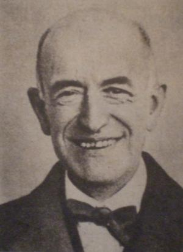

El Gran Teatro Falla es un teatro de la ciudad española de Cádiz, situado en laPlaza Fragela, frente a la Casa de las Viudas y junto a la Facultad de Medicina de la Universidad de Cádiz. Está catalogado como Bien de Interés Cultural.
De estilo neomudéjar, imita al arte islámico, en concreto utilizando arcos de herradura de estilo emiral cordobés y ladrillo de estilo almohade. Está construido en ladrillo rojo, y presenta tres grandes puertas de arco de herradura emiral en su fachada principal, con dovelas alternas en rojo y blanco. En planta tiene forma de herradura, a la que se van adaptando los pisos, cada uno de ello en los años 20.
Comenzó a construirse en 1884, siguiendo el proyecto de Adolfo Morales de los Ríos y Adolfo del Castillo Escribano, siendo alcalde de Cádiz Miguel Martínez de Pinillos, en el solar del antiguo Gran Teatro de Cádiz, construido en madera en 1871 por el arquitecto García del Álamo, y que se incendió en 1881. En 1886 el Ayuntamiento asumió la dirección de las obras, aunque la escasez de fondos provocó la paralización de las mismas en diversas ocasiones, lo que impidió que la obra finalizara hasta 1905. El encargado de las obras fue el arquitecto municipal Juan Cabrera de la Torre, quien modificó en gran parte el primitivo proyecto.
El 12 de enero de 1910 se inauguró con la interpretación de una sinfonía de Barbieri, siendo alcalde de Cádiz Sebastián Martínez de Pinillos y Tourné. Hasta 1926 se llamó Gran Teatro, año en el que pasó a llamarse Gran Teatro Falla en honor al hijo predilecto de la ciudad Manuel de Falla. Un año después el Carnaval sonó por primera vez en el teatro con el coro Los Pelotaris de Manuel López Cañamaque.
En 1984 los arquitectos Rafael Otero y José Antonio Carvajal se hicieron cargo de la restauración del edificio, que se inicia en 1986 al término de los carnavales, siendo ese año el pregonero de las fiestas Mario Moreno "Cantinflas", al que se le ofreció una gala benéfica en solidaridad con el terremoto ocurrido en México. Dicha restauración quedaría finalizada en el año 1991.
Tiene una capacidad para 1214 espectadores repartidos en butacas, palcos, anfiteatro y paraíso.
El escenario mide 18 metros de largo por 25,5 m de fondo, y el techo muestra una alegoría del Paraíso, obra de Felipe Abárzuza y Rodríguez de Arias.
Todos los años y durante el mes de febrero se celebra en el Gran Teatro Falla el Concurso de Agrupaciones del Carnaval de Cádiz, donde las distintas agrupaciones carnavalescas muestran todo su arte y genialidad en diversas modalidades. Dicha celebración se suspendió entre 1987 y principios de 1991 (sólo se acogieron las semifinales y final del Concurso de Agrupaciones) para reformar este teatro. Durante ese periodo, el Concurso pasó al Teatro Andalucía (hoy desaparecido).
El resto del año el Teatro acoge una Temporada de Otoño y una Temporada de Primavera con espectáculos como conciertos, obras de teatro y en menor medida musicales y ópera.
En 2010, con motivo de la celebración de su primer centenario, se realizaron diversas actividades conmemorativas